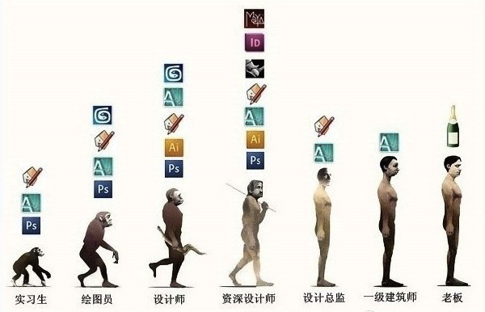

我发现一个特别有意思的事儿，看一个人电脑上装的软件，基本就能判断这个人是干什么工作的。
装了各种设计软件的（PS，AI，ID等），八成是个搞设计的，不过具体是干啥的还得细分。装了CAD、天正的，十有八九是建筑民工；装Rhino, Maya, GH，显示器又比较大的，是看起来狂拽酷炫实际上没活儿的参数化流派；而Final Cut, AE, PR的估计经常跟视频打交到，是个女编导的概率很大。
装各种工程软件的也一样，C++，JAVA，VIM的是码农；装Python, R，Processing及各种包的，估计常和数据打交到，与设计软件合并在一起的用的，可能是在搞可视化设计狮；与编程软件合着用的，很可能是只新时代程序猿。装Matlab, Mathmatica的，哎，同学你是哪个学校哪个实验室的？
要知道，真正的大佬其实只用喝酒吃饭，必要的时候会放个PPT就行了(谐音放个P)。

图片来源：互联网，似乎是由一张Office的图改成的设计师版，具体来源不详。
每个人的软件其实是自己的工作箱。就像厨师的刀，渔夫的网，不同类型的工具适合不同类别的人。不过我还是想推荐几个较为通用的工具，它们的一个共同特点就是：功能简单，解决某一特定的需求。如果你也有类似的需求，估计它们会适合你。
信息管理：
Dropbox：一款云存储工具，多平台。不同平台使用都非常方便，特别适合想在多个电脑、Pad、手机间同步工作的人使用，同时云端和本地双备份也可以减少因硬件损坏或丢失而带来的损失。（记得一位同学答辩前装论文的电脑丢了，还没有论文的备份，想死的心估计都有了。）
Evernote（印象笔记）：一款笔记类应用，多平台，可同步。我在不同平台上的使用感受是：iPad > iPhone > Mac OSX > Windows。
写作：
Mou : Markdown内核下的写作工具，目前只有MAC版，但其它支持Markdown语言的软件可在Window平台运行。软件非常轻巧（不到10MB），功能非常简单——就是写东西，可以认为是个高级的记事本。另外设置好声音后，会在打字的时候发出古老的打字机的声音，那个感觉只能体验才知道。值得一说的是，软件是由一名中国的独立开发者完成，让人佩服。
可能大家都习惯了用Word，但Word自身过于庞大臃肿，日常使用可能连1%的功能都用不到，大部分时候我们还要忍受启动速度慢，格式怎么都刷不对的烦恼。其实可以试试一种简单化的写作方式，沉下心来去写，专注文字本身。
数据处理&效率
这块我是菜鸟，用的是最常见的两个软件：Python和R。
Python，用的是Enthought出的Canopy,好处是预装了常用的包，并且可以方便的管理各种插件。如果你有.edu的邮箱的话可以用全部功能，即使没有，也无所谓，免费版提供的功能足够使用。
RStudio，算是R的集成开发环境，非常友好，易用性很强。
不知从这些图标能不能猜出作者的爱好啊：）